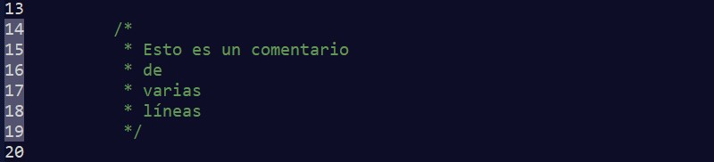
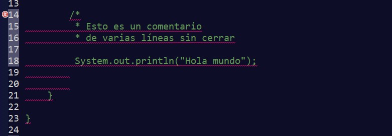
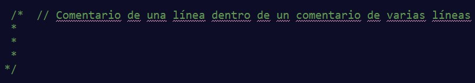
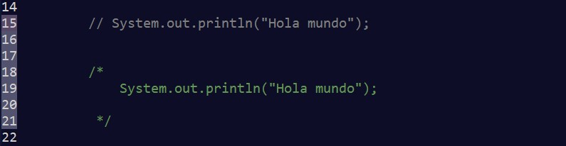

Los comentarios de texto son utilizados para generar anotaciones sobre nuestro código.
Son de gran importancia para cualquier programador, ya que permite entender el código fuente de manera sencilla, sin tener que revisar la estructura lógica del programa.
Estos comentarios son ignorados por el compilador e intérprete, sin afectar a la funcionalidad de nuestros programas.
Podemos contener comentarios de una línea, los cuales serán expresados mediante dos barras //.
Si intentáramos escribir en varias líneas con él, el compilador nos mostraría un error.
Si necesitáramos escribir más líneas deberíamos de utilizar en su lugar los comentarios de varias líneas que se representan con /* y */.
Ahora si cogemos el ejemplo anterior, con este tipo de comentarios, sí que podríamos tenerlo en dos líneas.
Tenemos que tener cuidado, porque si creamos un comentario de varias líneas éste deberá de cerrarse. Sino, todo el código que haya en la parte de abajo, lo interpretará como comentario, por lo que nuestro programa no compilará correctamente.
Podremos introducir comentarios de una línea dentro de comentarios de varias líneas.
Pero no podremos introducir comentarios de varias líneas dentro de otros. Como se aprecia en la imagen, lo muestra de un color diferente, indicando que es algún tipo de instrucción.
También nos puede ser de utilidad para anular código que no queremos que se ejecute mientras estamos de pruebas. Pero no se deberá dejar ahí cuando el proyecto se lleve a producción. Sí que podría ser útil si no queremos borrarlo por si lo necesitamos en algún momento.
Existen otro tipo de comentarios que se utiliza para documentar nuestros proyectos con JavaDoc, los cuales comienzan con /** y finalizan con */, pero esto se verá más hacia delante cuando ya se tengan unos conocimientos más sólidos del lenguaje.